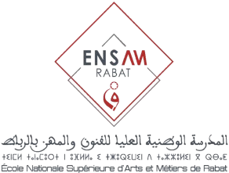

Bac Concours ENSAM cursussup
تقديم المؤسسة
تستغرق الدراسة بالمدارس الوطنية للعلوم التطبيقية والمدارس الوطنية العليا للفنون والمهن خمس سنوات (عشرة فصول) يحرز الطالب الناجح بعدها على دبلوم مهندس الدولة . وينظم التكوين على الشكل التالي:
- سنتان تحضيريتان: مسار للتكوين يستغرق سنتين (أربعة فصول) بعد البكالوريا. ويهدف التكوين فيهما إلى تمكين الطالب من اكتساب معارف وكفايات أساسية تمكنه من متابعة الدراسة في علوم المهندس.
- سلك المهندس: مسار للتكوين يستغرق 3 سنوات (ستة فصول) بعد السنتين التحضيريتين. ويهم التكوين بهذا السلك المجال العلمي والتقني الأساس ي والمتخصص إضافة إلى اللغات والمهارات الرقمية والمعلوميات والذكاء الاصطناعي والمهارات الحياتية والكفايات والمهارات الفنية والثقافية.
كيفية القبول
يرتكز المعدل المحتسب كما يلي:
— %75 من المعدل العام الامتحان الوطني للسنة الثانية لسلك البكالوريا.
—%25 من المعدل العام الامتحان الجهوي للسنة الأولى لسلك البكالوريا.
– بعد الانتقاء التمهيدي، ينظم اختبار كتابي وطني على شكل QCM ، الرياضيات والفيزياء.
التخصصات
✓الهندسة الميكانيكية
✓الهندسة المدنية
✓الهندسة الصناعية والانتاجية
✓الهندسة الالكتروميكانيكية
✓تذبير الأنظمة الكهربائيه الذكية
✓الهندسة الكهرومكانيكية
✓الذكاء الاصطناعي والهندسة المعلوماتية
✓الهندسة الرقمية في علوم البيانات والذكاء الاصطناعي
✓الطاقة الكهربائيه والصناعات الرقمية
✓هندسة المواد والجودة والبيئة
✓هندسة النظم الطاقية
✓هندسة الطب الحيوي
✓الهندسة الميكانيكية لصناعة الطيران
✓الهندسة الصناعية والتقنيات الرقمية
المدن التي توجد بها المدرسة
| المدن |
|---|
| مكناس |
| الدار البيضاء |
| الرباط |
شروط الترشيح:
يشترط في المترشح لاجتياز مباراة ولوج السنة الأولى بالمدارس الوطنية العليا للفنون والمهن أن يكون :
– مسجلا بالسنة النهائية من سلك الباكالوريا لسنة 2023/2022 ، أو حاصلا على شهادة الباكالوريا 2022/2021 في إحدى الشعب التالية:
– العلوم الرياضية (A -B)
– شعبة العلوم التجريبية ( SVT- Pc- Agro)
– شعب العلوم والتكنولوجيات (الكهرباء / الميكانيك)
– شعب ومسالك البكالوريا المهنية:
مسلك صناعة الطائرات – مسلك التصنيع الميكانيكي – مسلك الصيانة الصناعية – مسلك الإلكتروتكنيك وأجهزة التواصل – مسلك الصيانة المعلومياتية والشبكات- مسلك النظم الإلكترونية والرقمية – مسلك صيانة المركبات المتحركة (خيار: السيارات) – مسلك صناعة البنيات المعدنية- مسلك رسم البناء- مسلك أوراش البناء- مسلك اللوجيستيك – مسلك الطاقات المتجددة خيار نظم الطاقة الشمسية.
اجراءات الترشيح:
يتعين على المترشحين الراغبين في اجتياز المباراة الوطنية المشتركة للالتحاق بالمدارس الوطنية العليا للفنون والمهن تسجيل ترشيحهم على البوابة الإلكترونية ensam-concours ma الخاصة بالمباراة.
– ويتعين على كل مترشح، خلال هذه المدة، اختيار وترتيب المدارس الثلاث المراد الولوج إليهما أثناء تعبئة طلب المشاركة (مكناس والدار البيضاء والرباط). وبعد انقضاء هذه المدة، لا يمكن لأي مترشح التسجيل أو تغيير اختياراته.
– تجدر الإشارة إلى أن عدم اختيار المترشح لإحدى المؤسسات ، يعتبر تعبيرا منه عن عدم رغبته في الإلتحاق بها ويقصيه من ولوجها رغم اجتيازهه للاختبار الكتابي بنجاح.
– أما بالنسبة للمترشحين الحاصلين على شهادة البكالوريا الأجنبية، فيتعين عليهم إيداع نسخة من هذه الشهادة وكذا كشف نقطهم واستمارة تسجيلهم على البوابة الإلكترونية ونسخة من بطاقة التعريف الوطنية في المدرسة الوطنية العليا للفنون والمهن التي يرغب التسجيل بها
– من أجل حصر عدد المرشحين المؤهلين لاجتياز الاختبار الكتابي لولوح هذه المدارس والحاصلين على شهادة البكالوريا، سيتم الاعتماد على انتقاء تمهيدي، على أساس الاستحقاق.
للتسجيل، يمكنك زيارة الرابط التالي: